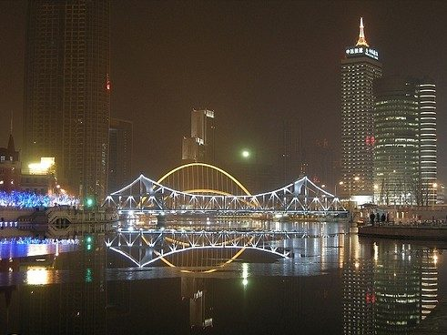
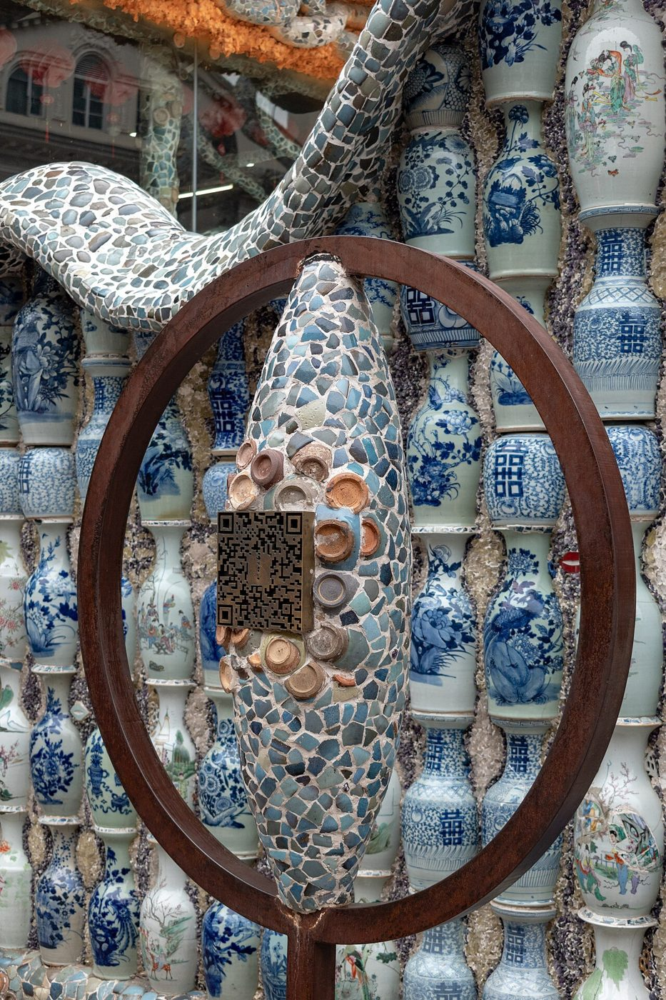

TIANJINAfterglow
抵达津城，沿海河慢慢散步


海河夜景 · 资料照片，非2026实况 · binhaizaixian / CC BY 2.0 图片许可
约19:00
今天这样走
THE DAY'S ROUTE打车15—30分；约16:35到，街边看10—15分钟
瓷房子 · 先看外观
15—30分钟｜¥20—35/车
2号线远洋国际中心→天津站换3号线→和平路，门到门约45—60分钟｜¥3左右/人｜1换乘；两端步行约15—25分，规划估算
同行人同行推荐打车，看外观后再打车去海河，不沿赤峰道一路走。
车程与费用为规划估算；拥堵、限停或排队可增加15—25分钟。
高德定位 · 点路线出发 ↗按精确门名搜索，不编造坐标。打开后核对落点，再点高德“路线/开始导航”；需要联网。页面内估算不是实时叫车报价。
一座以瓷片、瓷瓶和石雕装饰的老洋楼。先在街边看外立面，保留你想看的瓷房子，又不把抵达日变成赶路。
瓷片拼贴的外墙 · 瓷瓶围墙 · 屋顶装饰远观；可见范围以街边视角为准
外观约200—400米，含下车和重新上车；规划估算，不走到海河。（规划估算）
街边只看外观10分钟，随后打车去津湾；若同行人累，取消海河也可以。
可以跳过：上楼逐层参观、为了屋顶或拍照排队、瓷房子一路步行到海河。
街边外观不进入收费院落，通常无需购票；资料成人入内¥50/人，11/1实际票价、长者优惠与购票条件未实时核实，不预先当作已购。
图文与核实来源（联网）
本版嵌入的照片均附来源与许可；它们是资料照片，不代表2026到访日叶色、展览或开放情况。
青年餐厅（津湾店）
家常炒菜、宫保鸡丁、主食；可按口味点天津家常菜
预算：¥60—90/人，规划预算
地址：天津解放北路津湾广场百福大楼1层
怎么过去：海河津湾段步行约5—10分钟
营业：未实时核实，建议17:30到店
可坐下正餐；不专门追烤鸭，等位超过15分钟改同区有座店。
门店资料已检索；到访日营业、价格、排队未实时核实
高德看门店与营业 ↗资料 ↗约17:15到津湾，短逛后17:30—18:00吃晚饭
津湾广场 · 海河夜景
10—20分钟｜¥13—20/车
和平路站乘3号线1站到津湾广场；门到门约25—40分｜¥2/人｜0换乘；两端步行与进站可能更费力
外观后直接短程打车津湾；两地之间不安排长距离散步。
车程与费用为规划估算；拥堵、限停或排队可增加15—25分钟。
高德定位 · 点路线出发 ↗按精确门名搜索，不编造坐标。打开后核对落点，再点高德“路线/开始导航”；需要联网。页面内估算不是实时叫车报价。
只选津湾广场附近一小段河岸，看老建筑与水面灯影。不是天津站—意风区—天津之眼全程暴走。
津湾老建筑 · 解放桥远观 · 河面倒影
约0.6—1公里，台阶可绕开（规划估算）
只在津湾广场临河平台看20分钟。
可以跳过：天津之眼、瓷房子入内、五大道长线
河岸散步¥0，游船另计，不安排
青年餐厅（津湾店）
家常炒菜、宫保鸡丁、主食；可按口味点天津家常菜
预算：¥60—90/人，规划预算
地址：天津解放北路津湾广场百福大楼1层
怎么过去：海河津湾段步行约5—10分钟
营业：未实时核实，建议17:30到店
可坐下正餐；不专门追烤鸭，等位超过15分钟改同区有座店。
门店资料已检索；到访日营业、价格、排队未实时核实
高德看门店与营业 ↗资料 ↗✓ 今日检查 · 备注 · 临时待办
出门时间仅修改显示，不会自动改航班、预约和后续时段。景点状态只改手帖，真实订单由你自行处理。

.jpg){kind=link}


.jpg){kind=link}